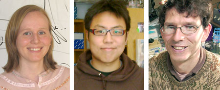

News Archives : 2009 : Putting the Kinetochore Together
by Soni Lacefield
May 9, 2009

Co-authors Soni Lacefield, Derek T. C. Lau, and Andrew W. Murray
Errors in chromosome segregation can often lead to human disease. For example, chromosomal instability is a hallmark of cancer, at least 5% of all recognized human pregnancies result in trisomy or monosomy, most leading to miscarriage, and Down Syndrome (trisomy 21) is the leading genetic cause of developmental disability. For chromosomes to precisely segregate in mitosis, the two sister chromatids must be bound to opposite poles of the bipolar spindle. Chromosomes attach to the spindle through a large macromolecular complex called the kinetochore that is assembled on centromeric DNA. Kinetochores not only link chromosomes to spindle microtubules, but they are also able to recognize inappropriate microtubule attachment and repair errors in attachment. Once kinetochores are properly bound, chromosomes will segregate by traveling along the spindle microtubules.
The kinetochore has been dissected genetically and biochemically into distinct complexes that have been assigned to different layers: the DNA-binding layer, the middle layer, and the microtubule-binding layer. Currently, more than 80 proteins have been defined as kinetochore components in budding yeast, and many of those are conserved from yeast to humans. Although many of the kinetochore proteins are known, how the complexes associate with one another to form a kinetochore and how they interact to perform the essential functions of the kinetochore are currently unknown. Several factors hamper understanding the kinetochore: it has multiple functions, its components are weakly expressed proteins, its structure is complex, and its principal function is essential.
To overcome these difficulties, we designed a strategy to assemble a synthetic kinetochore in budding yeast by recruiting individual kinetochore proteins to a defined piece of DNA on a mini-chromosome that carried no essential genes. We screened kinetochore proteins for those that, when fused to the lactose repressor, could allow segregation of a mini-chromosome containing a lactose operator. Targeting Ask1, a member of a microtubule-binding complex, to DNA can recruit other kinetochore proteins and promote the segregation of that DNA. We found that the synthetic kinetochore can completely replace the centromere on a natural chromosome and perform many of the functions of a kinetochore, although somewhat less well: it can biorient sister kinetochores, segregate sister chromatids, and repair errors in microtubule attachment. The synthetic kinetochore recruits many kinetochore complexes but does not require the DNA-binding components. This work showed that a kinetochore can be constructed from a member of the microtubule-binding complex and that the DNA-binding components are required only to attach the complex to the proper site in the DNA.